Problem Set 3
Clint Valentine April 22th 2015 Biomolecular Control and Dynamics Prof. Anand Asthagiri
Contents
Bistability and Phase Portrait for a First-Order System
The phase portrait of this single state variable system contains a positive feedback as the production of 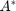 will encourage the production of more from remaining 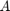. The phase portrait will show how this system will move through time. We will plot the entire system in a phase plane 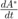 vs. and whenever the system intersects the y-axis, there is a fixed point.
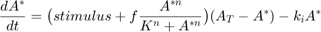
The following code and plots show the system for three stimulus values and two feedback values. The non-trivial fixed points where plotted. The qualitative change in the system for a feedback level of 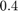 compared to 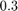 is that there now exists two stable fixed points in the system with no stimulus. This is significant because a system that begins with a higher level of can maintain production with zero stimulus.
Another qualitative characteristic that appears is the exaggerated slopes in the phase plane. The rate of in the higher feedback level system works harder to maintain the stable fixed points.
% Create colorbrewer for better plotting. Download hex2rgb.m. cb.black = hex2rgb('#000000', 1);cb.grey = hex2rgb('#999999', 1); cb.orange = hex2rgb('#E69F00', 1);cb.turquoise = hex2rgb('#56B4E9', 1); cb.green = hex2rgb('#009E73', 1);cb.yellow = hex2rgb('#F0E442', 1); cb.blue = hex2rgb('#0072B2', 1);cb.red = hex2rgb('#D55E00', 1); syms a stimulus; n = 7.0; K = 0.5; At = 1.0; ki = 0.2; f = [0.3, 0.4]; stim = [0, 0.06, 0.1]; figure(1); hold on; axis('on'); grid('on'); axis([0, 1, -0.2, 0.15]) yL = xlim; line(yL, [0 0], 'color', cb.grey); % x-axis x = linspace(0, 1, 1000); feedback = @(stimulus, x) (stimulus(1) + f(1) .* (x.^n) ./ (K^n + x.^n))... .* (At - x) - (ki .* x); eqn = (stimulus + f(1) * (a^n) / (K^n + a^n)) * (At - a) - (ki * a) == 0; y1 = feedback(stim(1), x); y2 = feedback(stim(2), x); y3 = feedback(stim(3), x); roots1 = solve(subs(eqn, stimulus, stim(1)), 'a'); roots2 = solve(subs(eqn, stimulus, stim(2)), 'a'); roots3 = solve(subs(eqn, stimulus, stim(3)), 'a'); h1 = plot(x, y1, x, y2, x, y3); h2 = plot(roots1(1), 0, 'ro', 'MarkerFaceColor', cb.yellow,... 'MarkerEdgeColor', cb.yellow); h3 = plot(vpa(roots2(2)), 0, 'ro', 'MarkerFaceColor', cb.yellow,... 'MarkerEdgeColor', cb.yellow); h4 = plot(vpa(roots2(3)), 0, 'ro', 'MarkerFaceColor', 'none',... 'MarkerEdgeColor', cb.yellow); h5 = plot(vpa(roots2(4)), 0, 'ro', 'MarkerFaceColor', cb.yellow,... 'MarkerEdgeColor', cb.yellow); h6 = plot(vpa(roots3(2)), 0, 'ro', 'MarkerFaceColor', cb.yellow,... 'MarkerEdgeColor', cb.yellow); h = xlabel('$A^{*}$', 'FontSize', 16); set(h, 'Interpreter', 'latex'); h = ylabel('$\frac{dA^{*}}{dt}$', 'FontSize', 16, 'rot', 0); set(h, 'Interpreter', 'latex'); h = legend([h1(1) h1(2) h1(3) h2 h4], {'Stimulus = 0.00', 'Stimulus = 0.06',... 'Stimulus = 0.10', 'Stable Fixed Point', 'Unstable Fixed Point'},... 'location', 'northeast'); set(h, 'Interpreter', 'latex'); h = title('Stimulus Driven Feedback (0.3) for a First Order System',... 'FontSize', 12); set(h, 'Interpreter', 'latex'); figure(2); hold on; axis('on'); grid('on'); yL = xlim; line(yL, [0 0], 'color', cb.grey); % x-axis x = linspace(0, 1, 1000); feedback = @(stimulus, x) (stimulus(1) + f(2) .* (x.^n) ./... (K^n + x.^n)) .* (At - x) - (ki .* x); eqn = (stimulus + f(2) * (a^n) / (K^n + a^n)) * (At - a) - (ki * a) == 0; y1 = feedback(stim(1), x); y2 = feedback(stim(2), x); y3 = feedback(stim(3), x); roots1 = solve(subs(eqn, stimulus, stim(1)), 'a'); roots2 = solve(subs(eqn, stimulus, stim(2)), 'a'); roots3 = solve(subs(eqn, stimulus, stim(3)), 'a'); h1 = plot(x, y1, x, y2, x, y3); h2 = plot(roots1(1), 0, 'ro', 'MarkerFaceColor', cb.yellow,... 'MarkerEdgeColor', cb.yellow); h3 = plot(vpa(roots2(2)), 0, 'ro', 'MarkerFaceColor', cb.yellow,... 'MarkerEdgeColor', cb.yellow); h4 = plot(vpa(roots2(3)), 0, 'ro', 'MarkerFaceColor', 'none',... 'MarkerEdgeColor', cb.yellow); h5 = plot(vpa(roots1(2)), 0, 'ro', 'MarkerFaceColor', 'none',... 'MarkerEdgeColor', cb.yellow); h6 = plot(vpa(roots1(4)), 0, 'ro', 'MarkerFaceColor', cb.yellow,... 'MarkerEdgeColor', cb.yellow); h7 = plot(vpa(roots2(4)), 0, 'ro', 'MarkerFaceColor', cb.yellow,... 'MarkerEdgeColor', cb.yellow); h8 = plot(vpa(roots3(2)), 0, 'ro', 'MarkerFaceColor', cb.yellow,... 'MarkerEdgeColor', cb.yellow); h = xlabel('$A^{*}$', 'FontSize', 16); set(h, 'Interpreter', 'latex'); h = ylabel('$\frac{dA^{*}}{dt}$', 'FontSize', 16, 'rot', 0); set(h, 'Interpreter', 'latex'); h = legend([h1(1) h1(2) h1(3) h2 h4], {'Stimulus = 0.00', 'Stimulus = 0.06',... 'Stimulus = 0.10', 'Stable Fixed Point', 'Unstable Fixed Point'},... 'location', 'northeast'); set(h, 'Interpreter', 'latex'); h = title('Stimulus Driven Feedback (0.4) for a First Order System',... 'FontSize', 12); set(h, 'Interpreter', 'latex');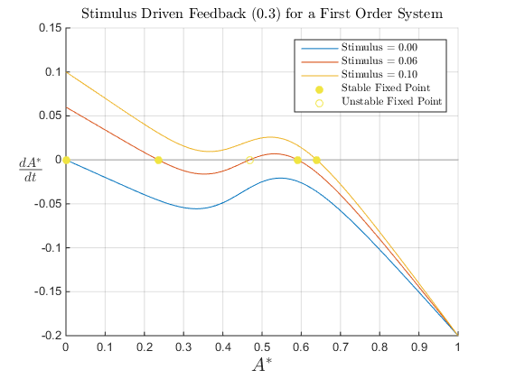 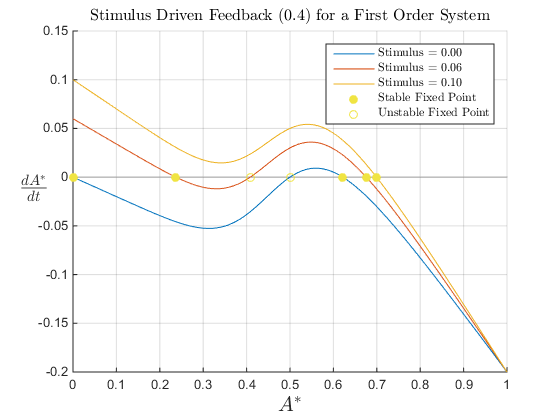
Phase Portrait and Stability Analysis of a Linear Second Order System
The phase portrait for this linear second order system is plotted below. Setting both equations to zero and solving for the solution yields a fixed point at (0,0). This method assumes that, at the intersection of our nullclines, we should have the fixed points of the system.
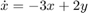
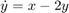
These equations can then be represented in vector form:
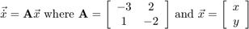
The general solution to this form is 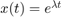. Substituting and simplifying this expression yields:
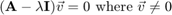
The characteristic polynomial can be found by subtracting 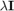 from 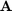 and taking the determinant.
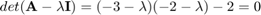
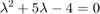
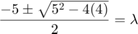
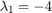
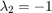
The corresponding eigenvectors can then be found using the following expression. In the phase plane, the trajectories that move in straight lines are the eigenvectors and move towards the critical point when both eigenvalues are positive.
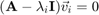
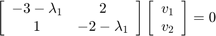
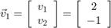
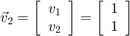
These eigenvectors are drawn as red and blue lines on the below phase plot and represent the unstable manifolds of the system. They conform with our hypothesis that they should be straight lines through the critical point at (0,0). Both eigenvalues are negative so the critical point is stable and is defined as an attractor. This is shown by the flow field of red arrows. It is also abvious that the major eigenvector 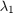, the fast eigenvector, determines the overall approach towards the critical point and the eigenvector  steers the solution to the critical point.
steers the solution to the critical point.
Finally, the general solution for this linear second order system is described as following:
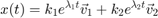
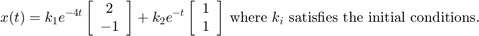
figure(3); hold on; xdom=linspace(-1,1,30); ydom=linspace(-1,1,30); [X,Y] = meshgrid(xdom,ydom); U= -3 .* X + 2 .* Y; V= X - 2 .* Y; axis([-1, 1, -1, 1]) % Vector field h0 = quiver(X, Y, U, V, 'color', cb.turquoise); % Solutionss phase = @(~, x)[-3 * x(1) + 2 * x(2); x(1) - 2 * x(2)]; for a = linspace(-1, 1, 8); for b = linspace(-1, 1, 8); x0 = [a;b]; [~, x] = ode45(phase, [0 15], x0); h1 = plot(x(:,1),x(:,2), 'color', cb.grey); end end % Eigen vectors x = (-1:1:10); s1 = -0.5 * x; s2 = x; h2 = plot(x, s1, 'color', cb.green); h3 = plot(x, s2, 'color', cb.blue); % Nullclines x = (-1:1:10); s1 = 1.5 * x; s2 = 0.5 * x; h4 = plot(x, s1, 'color', [251/255 128/255 114/255]); h5 = plot(x, s2, 'color', [251/255 128/255 114/255]); % Fixed point h6 = plot(0, 0, '.', 'color', 'y', 'MarkerSize', 20); h = title(strcat('Phase Portrait and Stability Analysis of a Linear',... ' 2\textsuperscript{nd} Order System'), 'FontSize', 12); set(h, 'Interpreter', 'latex'); h = xlabel('$x$', 'FontSize', 16); set(h, 'Interpreter', 'latex'); h = ylabel('$y$', 'FontSize', 16); set(h, 'Interpreter', 'latex'); h = legend([h6 h1 h0 h4 h2 h3], {'Stable Fixed Point', 'Solutions',... 'Vector Field', 'Nullclines', '$\vec{v}$ 1', '$\vec{v}$ 2'},... 'location', 'northwest'); set(h, 'Interpreter', 'latex');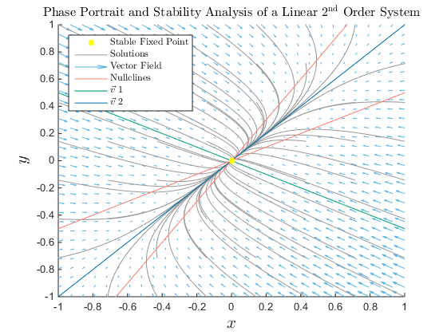
Complex Eigenvalues
We will now consider this linear system:
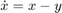
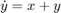
We will solve for the eigenvalues and eigenvectors as we did when solving the linear 2nd order system above.
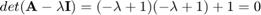
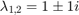
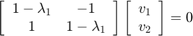
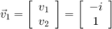
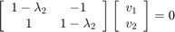
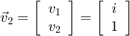
This is confirmed by the MATLAB code below.
The real-valued general solution to this set of differential equations is found as follows:
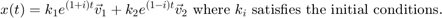
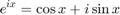
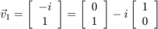
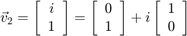
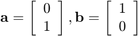
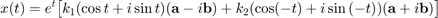
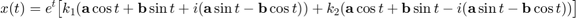
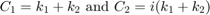
The general solution to this system, in real terms, is:
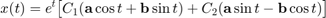
syms x y; dxdt = x - y; dydt = x + y; A = equationsToMatrix(dxdt, dydt); [V,D,~] = eig(A); disp(D); % Eigenvalues (trace) disp(V); % Eigenvectors (columns)
[ 1 - i, 0] [ 0, 1 + i] [ -i, i] [ 1, 1]
Stability Analysis for a Non-Linear System
To begin deriving the condition for instability as defined in Box 1 of Elowitz and Leibler (2000) we must find the non-trivial fixed point of the system and write and expression that determines the stability of that point. Using eigen analysis we will be able to represent this stability in the terms of a conditional statement. The Elowitz and Leibler (2000) model is composed of six staggered and coupled differential equations all based on the same form for protein and mRNA concentration rates. Since we are solving for a non-paramterized model and one that exists in a closed loop we may perform this stability analysis for two of the six coupled equations. The MATLAB code for the six coupled and staggered differential equations is found below, however, the terms for both analysis would not symplify to the expression in the paper.
First, we will find the nullclines and solve for each state variable:
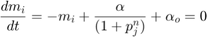
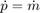
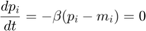
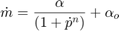
Next, we express the system in matrix form at the fixed point. This is the jacobian matrix of the system at the non-trivial fixed point:
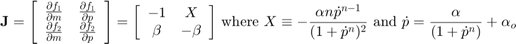
To derive the conditional for unstabilty as expressed in the Elowitz and Liebler (2000) paper we must find the the condition when the eigenvalues have imaginary parts. The eigenvalues will have an imaginary part when the descriminant of the jacobian is negative.
This expression is different than the Elowitz and Liebler (2000) expression found in Box 1:
Matt Manter and I emailed Michael Elowitz because we believed firmly that our calculations were correct and that there was, somewhere, and error in the paper or in our understanding of the topic. Here was his reply:
"There is an error in the paper whereby beta is defined two different ways (reciprocals of each other) in two places. so if you have a problem, you might try taking beta to mean 1/beta and see if that resolves it." -Michael Elowtiz (April 22 2015)
syms mlacl mtetR mcl placl ptetR pcl a ao b n X p m; % 6 coupled staggered differential equations dmlacldt = -mlacl + (a / (1 + pcl^n)) + ao; dmtetRdt = -mtetR + (a / (1 + placl^n)) + ao; dmcldt = -mcl + (a / (1 + ptetR^n)) + ao; dplacldt = -b * (placl - mlacl); dptetRdt = -b * (ptetR - mtetR); dpcldt = -b * (pcl - mcl); % Jacbobian for the above system j = jacobian([dmlacldt, dplacldt, dmtetRdt, dptetRdt, dmcldt, dpcldt],... [mlacl, placl, mtetR, ptetR, mcl,pcl]); % Replaces all partial function to partial p with X. Lose subscripts. j = subs(j, [-(a*n*placl^(n - 1))/(placl^n + 1)^2,... -(a*n*ptetR^(n - 1))/(ptetR^n + 1)^2,... -(a*n*pcl^(n - 1))/(pcl^n + 1)^2],... [X, X, X]); disp(simplify(trace(j)^2-4*det(j) < 0)); % Cannot simplify to paper expression % 2 Coupled differential equations dmdt = -m + (a / (1 + p^n)) + ao; dpdt = -b * (p - m); % Jacobian for the above system j = jacobian([dmdt, dpdt], [m p]); j = subs(j, -(a*n*p^(n - 1))/(p^n + 1)^2, X); disp(simplify(trace(j)^2-4*det(j) < 0)); % Cannot simplify to paper expression disp(simplify(-trace(j) + trace(j)^2-4*det(j) == 0)); disp(simplify(-trace(j) - trace(j)^2-4*det(j) == 0));
4*b^3*(X^3 - 1) + (3*b + 3)^2 < 0 b*(4*X + b - 2) < -1 b^2 + 4*X*b + 2 == b b == 0 | 4*X == b + 5